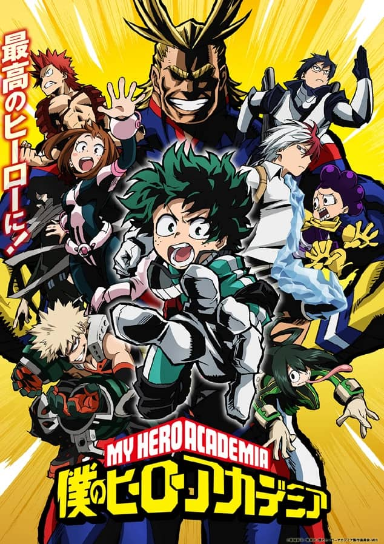
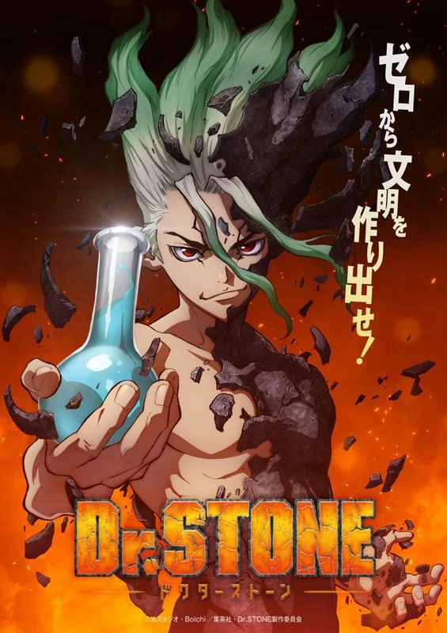
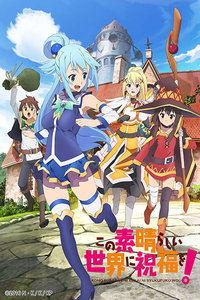
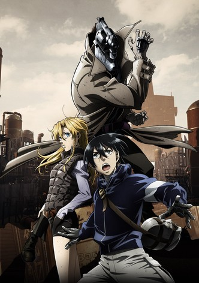

Configuración
- Perfil
- Mi lista
Foto de perfil
Banner del perfil

Configuración del perfil
Cambiar los datos de identificación de tu cuenta
-
Boku No Hero AcademyBoku No Hero
Las personas no nacen igual. El protagonista de esta historia es uno de esos casos raros que nacen sin superpoderes, pero esto no le impedirá perseguir su sueño: ser un gran héroe como el legendario All-Might. Para convertirse en el héroe que quiere ser, se apuntará a una de las academias de héroes más prestigiosas del país: Yueiko. Con la ayuda de su ídolo, All-Might, ¿podrá convertirse en un verdadero héroe?
-
Dr. StoneDr. Stone
Senku es un joven extremadamente inteligente con un gran don para la ciencia y una ácida personalidad, y su mejor amigo es Taiju, que es muy buena persona pero más apto para usar los músculos que para pensar. Cuando tras cierto incidente toda la humanidad acaba convertida en piedra, ellos logran despertarse en un mundo miles de años después, con la civilización humana completamente desaparecida y con toda la humanidad congelada en piedra como ellos estuvieron. Ahora es su obligación rescatar a la gente y crear un nuevo mundo.
-
FullMetal Alchemist: Brotherhood
 FullMetal Alchemist
FullMetal AlchemistLa historia se centra en dos hermanos, Edward Elric y Alphonse Elric que rompieron el mayor tabú de la alquimia, la trasmutación humana al tratar de revivir a su fallecida madre; en consecuencia Edward pierde su pierna izquierda y Alphonse pierde todo su cuerpo, Edward para salvar a su hermano sella su alma en una gran armadura de hierro a cambio de su brazo derecho; ahora los dos con un nuevo objetivo buscan desesperadamente la piedra filosofal para poder regresar sus cuerpos a la normalidad...
-
Hunter x Hunter
 Hunter x Hunter
Hunter x HunterGon Frecks,un niño de 12 años,vive con su tia Mito y su abuela en Isla Ballena, huérfano de madre y según su tía también de padre. Un día Gon es atacado por un oso del bosque, pero es salvado por un cazador quien le explica que está en busca de su maestro para así convertirse en un cazador, el es quien le dice que su padre Gin esta vivo. Enterado de esto Gon decide convertirse en cazador para poder encontrar a su padre.
-
Jujutsu Kaisen
 Jujutsu Kaisen
Jujutsu KaisenYuuji Itadori es un estudiante de instituto con unas habilidades físicas excepcionales. Todos los días, como rutina, va al hospital a visitar a su abuelo enfermo y decide apuntarse al club de ocultismo del instituto para no dar un palo al agua… Sin embargo, un buen día el sello del talismán que se hallaba escondido en su instituto se rompe, y comienzan a aparecer unos monstruos. Ante este giro de los acontecimientos, Itadori decide adentrarse en el instituto para salvar a sus compañeros. ¿Qué le deparará el destino?
-
Demon Slayer: Kimetsu no Yaiba
 Kimetsu no Yaiba
Kimetsu no YaibaEstamos en la era Taisho de Japón. Tanjiro, un joven que se gana la vida vendiendo carbón, descubre un día que su familia ha sido asesinada por un demonio. Para empeorar las cosas, su hermana menor Nezuko, la única superviviente de la masacre, ha sufrido una transformación en demonio. Destrozado por los acontecimientos Tanjiro decide convertirse en un cazador de demonios para poder devolver a su hermana a la normalidad y matar al demonio que masacró a su familia.
-
Mushoku Tensei: Isekai Ittara Honki Dasu
 Mushoku Tensei
Mushoku TenseiAsesinado mientras salvaba unos estudiantes que serían atropellados por un camión, un NEET de 34 años reencarna en un nuevo mundo de magia bajo el nombre de Rudeus Greyrat, un recién nacido. Con conocimiento, experiencia y arrepentimientos de una vida pasada, Rudeus jura llevar una vida plena y no volver a repetir sus errores. Ahora, dotado con un tremendo poder mágico, así como la mentalidad de un hombre adulto, Rudeus es visto como un genio en potencia por sus nuevos padres. Pronto, se verá siendo entrenado por poderosos guerreros, como su padre, un espadachín y una maga llamada Roxy Migurdia. Pero a pesar de su inocente exterior, Rudeus sigue siendo un otaku pervertido, y usa sus vastos conocimientos para hacer suyas a las mujeres que en su vida anterior nunca disfrutó.
-
Overlord
 Overlord
OverlordLa historia da comienzo cuando Yggdrasil, un popular juego online, es cerrado un día sin previo aviso. Sin embargo, el protagonista, Momonga, decide no salir del juego. Momonga así se transforma y se convierte en “el mago más poderoso”. El mundo sigue cambiando con él dentro, y los NPCs comienzan a sentir emociones. Sin familia, amigos ni lugar en la sociedad, Momonga tendrá que luchar por adaptarse al nuevo mundo en el que se ha convertido el juego.
-
Spy x Family
 Spy x Family
Spy x FamilyTodo el mundo tiene una parte de sí mismos que no puede mostrar a los demás. En una era en la que las naciones de todo el mundo se encuentran involucradas en una feroz guerra de información a puerta cerrada, Ostania y Westalis llevan décadas en guerra fría. La División de Inteligencia de Westalis (WISE) envía a su mejor espía, "Twilight", en una misión ultrasecreta para vigilar los movimientos de Donovan Desmond, quien dirige el Partido Nacional por la Unidad de Ostania, responsable de bombardear los esfuerzos de paz entre ambos países. La misión tiene por nombre "Operación Strix". La idea es "crear una familia en una semana para infiltrarse en las reuniones sociales organizadas por la escuela de élite a la que asiste el hijo de Desmond". Twilight adopta la identidad del psiquiatra Loid Forger y comienza a buscar miembros para su familia, pero Anya, la hija que adopta, resulta tener la capacidad para leer las mentes a los demás, mientras que su esposa, Yor, es una asesina. Todos mantendrán estos en secreto, pero comenzarán una vida juntos en la que deberán ocultarse sus identidades unos a otros. La paz del mundo está ahora en manos de esta nueva familia mientras se embarcan en una aventura repleta de sorpresas.
-
Mob Psycho 100
 Mob Psycho 100
Mob Psycho 100Cuenta la historia de “Mob”, un chico con poderes psíquicos que explota si su capacidad emocional alcanza el 100%. Recibió el apodo de “Mob” porque no destaca entre la gente, y trata de reprimir sus poderes para poder llevar una vida normal.
-
One Punch Man
 One Punch Man
One Punch ManLa serie está protagonizada por un héroe que ha entrenado tanto que se ha quedado calvo, y tiene tanta fuerza que puede acabar con cualquier enemigo de un solo puñetazo. Sin embargo, al ser tan fuerte, se aburre y se frustra porque no le cuesta nada vencer sus batallas.
-
Tensei shitara Slime Datta Ken
 Tensei shitara
Tensei shitaraSatoru Mikami es un hombre de 37 años que tiene un trabajo que no le gusta, sin salida y que no es feliz con la vida que lleva, pero cuando muere a manos de un ladrón y piensa que es su fin, se despierta descubriendo que se ha reencarnado en un mundo de magia y espada… ¡pero como un slime! Ahora tendrá que acostumbrarse a su nueva vida, aunque por suerte contará con dos habilidades únicas que le ayudarán a sobrevivir: una que le proporciona una gran comprensión de todo lo que le rodea, y otra que le permite copiar las habilidades de sus oponentes.
-
Kono Subarashii Sekai ni Shukufuku wo!Kono Subarashii
Esta popular comedia de mundos alternativos gira en torno a Kazuma Satou, un hikkikomori fan a muerte de los videojuegos, el anime y el manga. Un accidente de tráfico pone fin a su vida… o eso debería haber pasado, pero se despierta con una preciosa chica al lado que se presenta diciendo que es una diosa. La chica le dice “Tengo buenas noticias. ¿Te gustaría ir a un mundo alternativo? Puedes llevarte sólo una cosa que te guste” y él le contesta “Entonces, te llevaré a ti”. Con eso, es teletransportado a otro mundo en el que comienza su gran aventura sometiéndose a un rey demonio… aunque antes de eso tiene que trabajar duro para costearse la comida, la ropa y la vivienda. Kazuma quiere vivir en paz, pero la diosa le crea un problema tras otro, y entonces el ejército del rey demonio se fija en él.
-
No Guns LifeNo Guns Life
Después de la guerra, hay muchos “extends” en la ciudad, personas cuyos cuerpos fueron modificados para convertirlos en armas peligrosas. Inui Juuzou es uno de ellos, y no tiene recuerdos de su vida y cuerpo antes de que su cabeza se transformara en un arma. Por extraño que parezca, su pistola ubicada en la cabeza está diseñada para que solo alguien detrás de él pueda apretar el gatillo. En la actualidad, Juuzou se gana la vida tomando casos que involucran a extends en la ciudad, y es asistido por Mary, una joven inteligente que ha tomado bajo su protección.
-
No Game No Life
 No Game No Life
No Game No LifeLa historia está protagonizada por Sora y Shiro, hermano y hermana, que son muy famosos en todo Internet como NEETs y hikikomoris que se pasan el día jugando a videojuegos, tanto que son una leyenda. Los dos consideran el mundo real como “un juego malo”. Un día, un chico llamado “Dios” les invoca a otro mundo. Allí, Dios ha prohibido las guerras y declara que en el mundo todo se decidirá mediante juegos, incluso cuáles serán las fronteras entre países. La humanidad se ha visto reducida a una sola ciudad debido a que el resto de razas le han ido quitando todo el territorio. Shiro y Sora tendrán que ser los salvadores de la humanidad en este mundo alternativo.